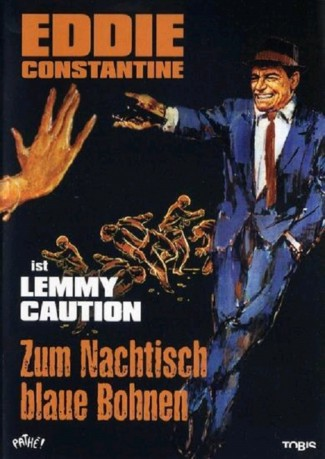

IMDB-Wertung: 6.0 / 10
IMDB-Wertung: 6.0 / 10  Metascore:
Metascore: 
Lemmy Caution ist auf der Suche nach einem verschwundenen Wissenschaftler. Dieser hat eine Formel für einen leichtgewichtigen Brennstoff entdeckt.
Alternativ: Your Turn, Darling (Englischer Titel)
 IMDB-Wertung: 6.0 / 10 Metascore:
Lemmy Caution ist auf der Suche nach einem verschwundenen Wissenschaftler. Dieser hat eine Formel für einen leichtgewichtigen Brennstoff entdeckt.
Jahr: 1963
Dauer: 87 Minuten
FSK: 16
Land: Frankreich Studio: Constantin FilmTonspuren:
Untertitel:
Auflösung: SD (640x272) Größe: 698 MB
Regisseur: Bernard Borderie
Drehbuch: Marc-Gilbert Sauvajon
Soundtrack:
Darsteller:
 Eddie Constantine als Lemmy Caution
Eddie Constantine als Lemmy Caution Philippe Lemaire als Enrico Pranzetti
Philippe Lemaire als Enrico Pranzetti Noël Roquevert als General Jean Walker
Noël Roquevert als General Jean WalkerDatei: X:\Person\Eddie Constantine\Zum Nachtisch blaue Bohnen (1963, FSK16, 640x272).avi seit 07.07.2017
Festplatte: HD Collection-7+mehr(A-Z)+Person
 Es gibt insgesamt 10 Filme in der Gruppe 'Person\Eddie Constantine'
Es gibt insgesamt 10 Filme in der Gruppe 'Person\Eddie Constantine'